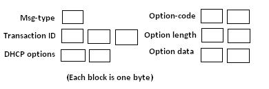

Chapter 1 - Introduction to NetX Duo DHCPv6 server
In IPv6 networks, DHCPv6is required for Clients to obtain IPv6 addresses. It does not replace DHCP which is limited to IPv4in that it does not offer IPv4 addresses. DHCPv6 has similar features to DHCP as well as many enhancements. A Client who does not or cannot use IPv6 stateless address auto-configuration can use DHCPv6 to be assigned a unique global IPv6 address from a DHCPv6 Server.
NetX Duo was developed to support IPv6 network based applications and network protocols such as DHCPv6. This document will explain in detail how the NetX Duo DHCPv6 Server assigns IPv6 addresses to DHCPv6 Clients.
DHCPv6 Communication
DHCPv6 Message structure
Message content is basically a message header followed by one or more (usually more) option blocks. Below is the basic structure where each block represents one byte:

Figure 1. DHCPv6 message and option block structure
The 1-byte Msg-Type field indicates the type of DHCPv6 message. The 3-byte Transaction-ID field is set by the Client. It can by any sequence of characters but must be unique for each Client message to the Server (conserved across duplicate messages sent by the Client). The Server uses that Transaction-ID for each response to the Client to enable the Client to match up Server messages in the event of packets that are delayed or dropped on the network. Following the Transaction-ID field, are one or more DHCPv6 options used to indicate what the Client is requesting.
The DHCPv6 option structure is composed of an option code, an option length field, which does not include the length or code fields, and finally the option data itself which is one or more 2 byte option code fields for the data the Client is requesting.
Some option blocks have nested options. For example, an Identity Association for Non Temporary Address (IANA) option contains one or more Identity Association (IA) options to request IPv6 addresses. The IANA option returned in the Server Reply message contains the same IA option(s) with the IPv6 address and lease times granted by the Server, as well as a Status option indicating if there is an error with the Client address request.
A list of all option blocks and their description is provided in Appendix A.
DHCPv6 Message Types
Although DHCPv6 greatly enhances the functionality of DHCP, it uses the same number of messages as DHCP and supports the same vendor options as DHCP. The list of DHCPv6 messages are as follows:
-
SOLICT (1) (sent by Client)
-
ADVERTISE (2) (sent by Server)
-
REQUEST (3) (sent by Client)
-
REPLY (7) (sent by Server)
-
CONFIRM (4) (sent by Client)
-
RENEW (5) (sent by Client)
-
REBIND (6) (sent by Client)
-
RELEASE (8) (sent by Client)
-
DECLINE (9) (sent by Client)
-
INFORM_REQUEST (11) (sent by Client)
-
RECONFIGURE* (10) (sent by Server)
*RECONFIGURE is not supported by the NetX Duo DHCPv6 Server.
The basic DHCPv6 request sequence, with the equivalent DHCPv4 message type in parenthesis, is as follows:
Client Solicit (Discovery) Server Advertisement (Offer) Client Request (Request) Server Reply (DHCPAck)
Client Renew(same) Server Reply (DHCPAck)
DHCPv6 Message Validation
Transaction ID: The Client must generate a transaction ID for each message it sends to the Server. The DHCPv6 Server will reject any message from the Client not matching this transaction ID. The Server in turn must use the same transaction ID in its responses back to the Client.
DHCPv6 unique Identifiers (DUIDs)
All Server messages must also include a DHCPv6 unique Identifier (DUID) in each message or the DHCPv6 Client should not accept the message. A Link Layer (LL) DUID is a control block containing client MAC address, hardware type, and DUID type. A Link Layer Time (LLT) DUID additionally contains a time field which decreases the chances the DUID will not be unique on the host network. For that reason RFC 3315 recommends LLT DUIDs over LL DUIDs. If the host application does not create its own unique time value, NetX Duo DHCPv6 will provide a default one. The third type of DUID is the Enterprise (Vendor assigned) DUID which contains a registered Enterprise ID (as in registered with IANA) and private data that is variable in type and length e.g. based on memory size, operating system type of other hardware configuration. See the list of Configuration Options elsewhere in this document for setting up the Server vendor assigned and private ID values.
The Client must also include its DUID in its messages to the Server except for INFORM_REQUEST, or the Server will reject them.
DHCPv6 Client Server Sessions
DHCPv6 Clients and Servers exchange messages over UDP. The Client uses port 546 to send and receive DHCPv6 messages and the Server uses port 547. The Client initially uses its link-local address for transmitting and receiving DHCPv6 messages. It sends all messages to DHCPv6 servers using a reserved, link-scoped multicast address known as the All_DHCP_Relay_Agents_and_Servers multicast address (FF02::01:02).
ForIPv6 address assignment requests, the DHCPv6 Server listens for Solicit messages sent to the All_DHCP_Relay_Agents_and_Servers address. In the Solicit request, the Client can request the assignment of specific IPv6 address or let the Server choose one. It can also request other network configuration information from the Server.
If the DHCPv6Server extracts a valid Solicit message and can assign an IPv6 address to the Client, it responds with an Advertise message containing the IPv6 address it will grant to the Client, the IPv6 address lease time and any additional information requested by the Client. If the Client accepts the Server offer it responds with a Request message letting the Server know it will accept the IPv6 address. The Server confirms the Client is bound to the IPv6 address with a Reply message.
If the Client DHCPv6 message is invalid, the Server will discard the message silently. If the Server is unable to grant the request it will send a Reply message with an indication of the problem in the status field of the IP address IANA option. If duplicate Client requests are received the Server resends its previous DHCPv6 response, assuming the Client simply did not receive the packet.
It is up to the Client to verify that its assigned IPv6 address from the Server is not assigned to another host on the system by using various IPv6 protocols such as Duplicate Address Detection. If the address is not unique, the Client will send the Server a Decline message. The Server updates its IP lease table with this information, recording that the address is already assigned. Meanwhile the Client must restart the DHCPv6 request process with another Solicit message.
In addition to an IPv6 address, a Client will likely also need to know the DNS server and possibly other network information such as the network domain name. DHCPv6 provides the means to request this information using either the use of Option Requests in the Solicit and Request messages, or separately in Information Request messages. DHCPv6 options are explained later in this chapter.
IPv6 Lease Duration
When the Server grants an IPv6 address to a Client, it also assigns the lease duration (lifetime)in the IANA option for when it recommends the Client to start renewing (T1) or rebinding (T2) its IPv6 address using Renew and Rebind messages. The difference between the two is the Client directs the Renew message to the Server by including the Server DUID in the Renew request. However, it does not specify any server, and hence does not include a Server DUID, in the Rebind message to the All_DHCP_Relay_Agents_and_Servers address. The IA option which contains the actual IPv6 address the Server grants the Client also contains the preferred and valid lifetimes when the leased IPv6 address becomes deprecated or obsolete (invalid), respectively.
The NetX Duo DHCPv6 Server maintains a session timeout for each Client to track the time between Client messages. This is necessary in the event of a Client host losing connectivity or the network doing down. When the session timeout expires, it is assumed the Client is either no longer interested or able to make DHCPv6 requests of the Server. The Server deletes the Client record and returns any tentatively assigned IPv6 address back to the available pool. The session timeout wait is a user configurable option.
If the Client wishes to release its IPv6 address, or discovers that the IPv6 address assigned to it by the DHCPv6 Server is already in use, it send a Release or Decline message respectively. In the case of a Release message, the Server returns that IPv6 address status back to the available pool. In the case of the Decline message, it updates its IP lease table to indicate this IPv6 address is not available (owned by another entity elsewhere on the network).
IPv6 Lease and Client Record Data
When the DHCPv6 Server starts accepting Client requests it maintains a list of active Clients who are requesting or have been assigned IPv6 addresses. The Server checks for IP lease expiration by means of a lease timer that periodically updates the Client lease duration. When the duration exceeds the valid lifetime, the Server clears the Client record and returns its IPv6 address back to the available pool. It is up to the Client to start the renewal/rebinding process before this happens!
The NetX Duo DHCPv6 Server client record table contains information to identify Clients, and 'state' information for validating DHCPv6 Client requests and assigning or re-assigning IPv6 addresses. Such information includes:
-
The Client DHCPv6 Unique Identifier (DUID) which uniquely defines each Client host on a network. The Client must always use this same DUID for all its DHCPv6 messages.
-
The Client Identity Association for Non Temporary Addresses (IANA) and Identity Association IPv6 address (IA) cumulatively which define the Client IPv6 address assignment parameters.
-
Client option requests (DNS server, domain name, etc).
-
The Client IPv6 source address (if set) and destination address (if not multicast) of its most recent DHCPv6 request.
-
The Client’s most recent message type and DHCPv6 'state'.
NetX Duo DHCPv6 Server Requirements and Constraints
The NetX Duo DHCPv6 Server API requires ThreadX 5.1 or later, and NetX Duo 5.5 or later.
Requirements
IP Thread Task Setup
The NetX Duo DHCPv6 Server requires a creation of an IP instance for sending and receiving messages to DHCPv6 on its network link. This is done using the nx_ip_create service. The NetX Duo DHCPv6 Server itself must be created. This is done using the nx_dhcpv6_server_create service.
DHCPv6 utilizes NetX Duo, ICMPv6 and UDP. Therefore IPv6 must first be enabled prior to using DHCPv6 Server by calling the following NetX Duo services:
-
nx_udp_enable
-
nxd_ipv6_enable
-
nxd_icmp_enable
Further, before the DHCPv6 Server can be started, it has a number of set up tasks to perform:
-
Create and validate its link local and IPv6 global addresses. Address validation is performed automatically by NetX Duo using Duplicate Address Detection if it is enabled. See the NetX Duo User Manual for details on link local and global IP address validation.
-
Set the network interface index for its DHCPv6 interface.
-
Create an IP address range for assignable IPv6 addresses. Or, if data exists from a previous Server DHCPv6 session, IPv6 lease table and client records from that session must be uploaded from non volatile memory to the DHCPv6 Server. The small example system elsewhere in this document will demonstrate the DHCPv6 Server services for accomplishing this requirement.
-
Set the Server DUID. If the Server has created its DUID in a previous session it must use the same data to create the same DUID for messages to its Clients. The small example system elsewhere in this document will demonstrate how this requirement is accomplished.
At this point the DHCPv6 Server is ready to run. Internally the NetX Duo DHCPv6 Server will create a UDP socket bound to port 547, and starts listening for Client requests.
Packet Pool Requirements
NetX Duo DHCPv6 Server requires a packet pool for sending DHCPv6 messages. The size of the packet pool in terms of packet payload and number of packets available is user configurable, and depends on the anticipated volume of DHCPv6 messages and other transmissions the host application will be sending.
A typical DHCPv6 message is about 200-300 bytes depending on the number of additional options requested by the Client, and information available from the Server.
Setting the DHCPv6 Server interface
The DHCPv6 Server defaults to the primary network interface as the interface it will accept Client requests on. However, the host application must still set the global address index which it used to create the Server global address. The DHCPv6 interface index and global address index are set using the nx_dhcpv6_server_interface_set service. This is also demonstrated in the "small example" in this document.
Saving DHCPv6 DUID across Server Reboots
The DHCPv6 protocol requires the Server to use the same DUID across multiple reboots. Any data used to create the DUID must therefore be stored and retrieved from nonvolatile memory for this requirement. For hosts that use the Link Layer Plus Time DUID which requires access to a real time clock. The NetX Duo DHCPv6 host application should include real time data access for generating a time value for the initial Server DUID creation, and store that data for reuse on subsequent Server sessions. The nx_dhcpv6_set_server_duid then takes DUID data as its arguments, as well as configuration options depending on DUID type, to produce (or reproduce) its own DUID.
Assignable IPv6 Address List Creation
After creation of the DHCPv6 Server, the Server host application must create a range of assignable IPv6 global addresses if there is no previously stored IP address list data. This is done using the nx_dhcpv6_create_ip_address_rangeservice which takes as input a starting and ending IPv6 address.
Saving DHCPv6 Assignable Address and Client data
The DHCPv6 protocol requires that the DHCPv6 Server save its Client and IPv6 address data in nonvolatile storage in the event of rebooting the server. The NetX Duo DHCPv6 Server has several API for uploading and downloading Client and IPv6 address data to and from the DHCPv6 Server, respectively:
nx_dhcpv6_add_client_record
nx_dhcpv6_add_ip_address_lease
nx_dhcpv6_retrieve_client_record
nx_dhcpv6_retrieve_ip_address_lease
Uploading data to the Server must be done before restarting the Server. Downloading the data should be done only after the DHCPv6 Server is stopped (or suspended). The services for doing so are described in detail later in this document. However, the NetX Duo DHCPv6 provides does not define an access to nonvolatile storage. This must be handled by the host application. The small example demonstrates how the host application does this.
Server DHCP Unique Identifier (DUID)
The Server DUID uniquely defines the DHCPv6 Server host on the network. If a Server has not previously created its DUID, it can use the nx_dhcpv6_server_set_duid to create one. As per RFC 3315, the DHCPv6 Server must save this DUID to nonvolatile memory to be able to retrieve it after Server reboots. The DHCPv6 Server supports the Link Layer, Link Layer Time and Enterprise (Vendor assigned) DUID types. Note that the Client must send in the Vendor type DUID directly. The option for Vendor type DUIDs (17) is not directly supported by the NetX Duo DHPv6 Server.
The DHCPv6 Server host application has default values for IPv6 address assignment including lease timeout. See Configurable Options later in this document for how to set these options. :
The IANA control block contains the T1 and T2 fields. The IA block in the IANA control block contains the preferred and valid lifetime fields. The host application has configurable options defined elsewhere in this document for setting these options. They are assigned to all Client IPv6 address requests.
These DHCPv6 IP lease parameters are defined below.
T1 — time in seconds when the Client must start renewing its IPv6 address from the Server that assigned it.
T2 — time in seconds when the Client must start rebinding the IPv6 address, if renewal failed, with any Server on its link.
Preferred lifetime — time in seconds when the Client address becomes deprecated if the Client has not renewed or rebound it. The Client can still use this address.
Valid lifetime — time in seconds when the Client IP address is expired and MUST not use this address in its network transmissions.
The RFC recommends T1 and T2 times that are 0.5 and 0.8, respectively, of the preferred lifetime in the Client IANA option. If the Server has no preference, it should set these times to zero. If a Server reply contains T1 and T2 times set to zero, it is letting the Client set its own T1 and T2 times.
Constraints
NetX Duo DHCPv6 Server does not support the following DHCPv6 options:
-
Rapid Commit option which optimizes the DHCPv6 address request process to just the Solicit and Reply message exchange
-
Reconfigure option which allows the Server can initiate changes to the Client’s IP address status.
-
Unicast option; all Client messages must be sent to the All_DHCP_Relay_Agents_and_Servers multicast address rather than to the DHCPv6 Server directly.
-
Identity Association for the Temporary Addresses(IA_TA) option which is a temporary IP address granted to a Client.
-
Multiple IA (IPv6 addresses) options per Client Request
-
Relay host between DHCPv6 Client and Server e.g. Client and Server must be on the same network.
-
IPSec and Authentication are not supported in DHCPv6 messaging. However, the IP instance may be IPSec enabled depending on the version of NetX Duo in use.
-
The NetX Duo DHCPv6 Server directly supports only the DNS server option request. This may change in future releases.
-
The Prefix Delegation option is not supported.
-
Authentication of DHCPv6 messages although IPSec can be enabled in the underlying NetX Duo environment. Neither does the NetX Duo DHCPv6 Server support relay connections to the Clients. It is assumed all Client requests originate from hosts on the Server network.
NetX Duo DHCPv6 Server Callback Functions
nx_dhcpv6_IP_address_declined_handler
When the DHCPv6 Client sends a Decline message, the NetX Duo DHCPv6 Server marks the address as not available in its IPv6 address tables. To have the ability to customize the Server handling of this message, the nx_dhcpv6_IP_address_declined_handler is provided. However, this callback is not currently implemented.
nx_dhcpv6_server_option_request_handler
When the DHCPv6 Client message contains option request data, the NetX Duo DHCPv6 Server forwards each option request option code to this user callback, if defined. This gives the NetX Duo Server the capability to let the user defined callback fill in the data. However this functionality is not currently implemented.